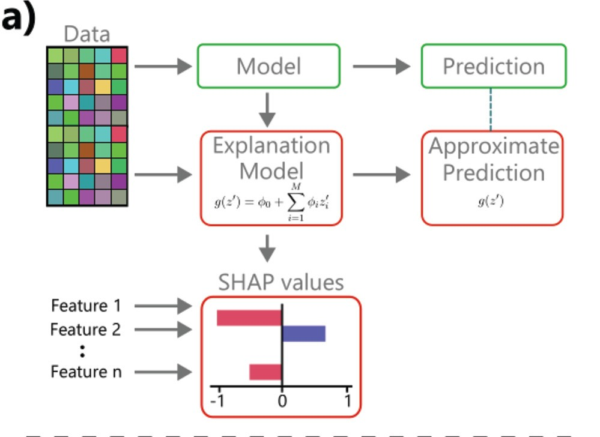
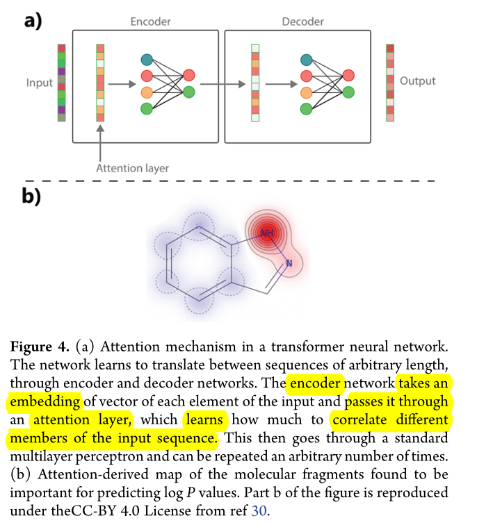
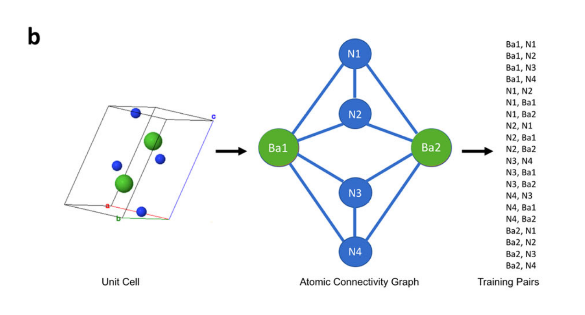
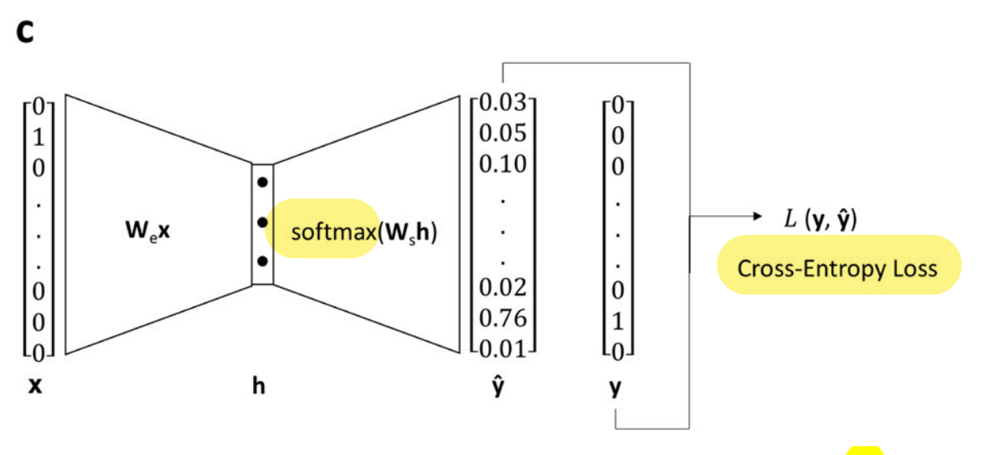
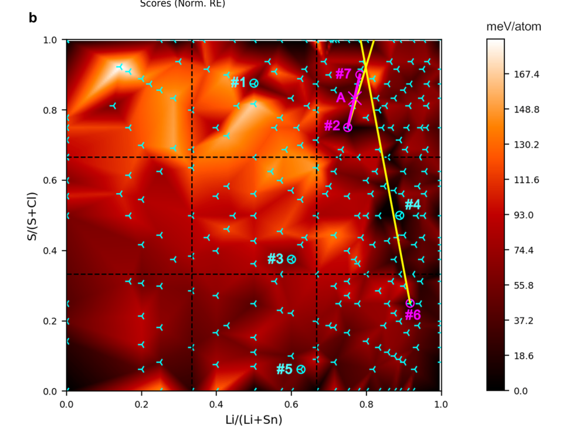

Blog AI4Chem
Welcome to the blog!
Here I write my thoughts on topics related to AI for chemistry.
The index can be found by opening the sidebar.
License
All the content here is under CC BY 4.0.
Tools Used
Explainable AI for chemistry
These are some of my opinions and ideas after reading Interpretable and Explainable Machine Learning for Materials Science and Chemistry (2022), and Explaining Explanations: An Overview of Interpretability of Machine Learning (2019).
A very interesting experiment in terms of explainability was https://distill.pub.
Summary
Scientific models are expected to be explainable; that is, an expert human is confident on how it works, what it means and so on.
When the opposite happens, the model is called a "Black Box". Currently, most deep-learning models are black boxes.
This is how we get to the question to be explored:
- In which ways are models explainable?
- How can this be leveraged to deep learning models?
(Admittedly, in some cases we may be satisfied with DNNs' predictive power alone!)
Characterising Explanations
These are my own defs, inspired by the papers at the top.
- Complexity: how hard it is. Frequently it can be reduced by using domain concepts e.g. mass or charge; or by simplifying a model or using proxy models.
- Completeness: the more we can explain "what ifs" about the model, the more complete an explanation is.
There are tradeoffs between all these above, using domain concepts is unlikely to explain a model completely i.e. they would answer only a subset of "what ifs".
Enhancing Explanations
As an example of Classical ML think of Support Vector Regression, and other kinds of regressions.
Intrinsic methods
We want to make the mathematical model more explainable. Regardless of our knowledge, some models will map in a more meaningful manner to the phenomenon being modelled.
These are methods that can help us with it:
- Simplifying the model (when possible)
- Regularisation Approaches (SISSO, LASSO) can help by identifying the most important descriptors to use.
- LASSO: to remove features when tightly correlated (leaving the most helpful one).
- Generalised Linear Models (GLMs) where the generalised model approximates the more complex model i.e , respectively. The GLM, , is defined as:
Extrinsic Methods
We want to understand the model by looking at it's behaviour. Its outputs, input-outputs relationships, and so on.
- What-if: Correlate changes in input-features with changes in outputs.
- Partial Dependence Plots (PDPs). Though it masks possible correlations between features (if all are kept constant but one).
- Individual Conditional Expectations (ICE) overcomes the limitation above.
- Feature Importance methods: partial derivative of an output w.r.t some input feature.1
- Shapley Analysis: involves fitting a linear model using nearby input-points.
- We get insight on which features are locally relevant, by looking at the accompanying coefficients.
- The coefficients quantify the effect of each feature in the output.
- It seems to be derived from the GLM. (I assume they fit different GLMs to different areas of their input space, and then analyze the distribution of coefficients? I am unsure.)
- Counterfactual Analysis: I did not follow this one, so I skip it. However, counterfactuals are hypotheticals like: X wouldn't have happened hadn't Y not happened.
The image below is from the paper, under CC BY 4.0 (cropped), the main things to notice are the linear generalised model and the Shapley's contributions from different features (how much each feature affects the output). It seems to derive from the GLM.
{kind=link}

Image from Original Paper under CC-BY-SA 4.0
Interpreting Deep Learning Models
This is the interesting part at present (2026), although the paper attention is split between deep learning and classical machine learning, so there isn't very much about deep learning.
The paper mentions the processing and representation approaches. These concepts map to "what ifs" (or extrinsic) and "looking inside the model" (intrinsic).
Extrinsic Methods
- Processing Methods: How the model processes an input (like what-if analyses i.e extrinsic).
- Salience Methods or Class Activation Maps: Finding which filters are most sensitive to which features or image regions.
- For example, we decompose sum for a class prediction, and find where the largest contribution came from. That way we can tell which filter may be most responsible for a particular feature in an image.
- analyse which activations respond stronger to which features (e.g class activation map or CAM)
- or where changes in the activations change the output the most (derivatives/gradients, grad-CAM).
- Attention-based approches: this is very similar to salience methods. I expand below.
- Salience Methods or Class Activation Maps: Finding which filters are most sensitive to which features or image regions.
The paper mentions transformers as well. A transformer operates upon an embedding, for example an atom vector, and learns which parts pay attention to other parts. These are called attention masks.
A good explanation is provided as an image (highlights are mine):
{kind=link}

Image from Original Paper under CC-BY-SA 4.0
The paper continues (bold is mine):
These representations, known as attention masks, can be interpreted in similar way to salience maps and determine sections of the input data that a model exploits for making predictions. The authors of a transformer model trained on chemical reaction data were able to perform atom-mapping and learn chemical grammars, i.e., identify atoms during a chemical reaction, by interpreting its learned attention map.
Finally the paper warns us:
With salience and attention-based approaches, there is a danger of overinterpretation, particularly in cases where physical explanations are searched for.
It's mentioned as well, that it's important to test any physical interpretation with more than one class (of molecule, image, or input), since two errors can happen:
- What is observed happens for all classes.
- What is observer is just the network exploiting some correlation, without real meaning (shortcut learning).
Both -VAEs or transformers are considered quite explainable models.
Intrinsic Methods
There isn't much about these ones, this is what I take away:
- Representation Methods: Interpret the learnt representations (i.e intrinsic). This is not always possible and sometimes may be just somewhat interpretable, or interpretable "to a degree".
- Introducing inductive biases related to symmetry.
-
This I think can be done also numerically, without actually calculating the derivative. See refs 20 and 21 in the paper for more detail. ↩
Machine learning for molecular and materials science
Useful snippets from the Perspective paper Machine learning for molecular and materials science.
Representations of atoms, molecules, materials
The process of converting raw data into a format more suitable for an algorithm is called feature engineering.
The more suitable the representation of the input data, the more accurately can an algorithm map it to the output data.
Selecting how best to represent the data may require insight into both the underlying scientific problem and the operation of the learning algorithm, since it is not always obvious which choice of representation will give the best performance
Some representations:
- Coulomb Matrix: atomic nuclear repulsion information.
- Graphs: connectivity of molecules.
- String representations: SMILES, SELFIEs,..
- Solid-state unit-cells: Representations based on radial distribution functions, Voronoi tessellations, and property-labelled materials fragments (...)
In the solid-state, the conventional description of crystal structures by translation vectors and fractional coordinates of the atoms is not appropriate for ML, since a lattice can be represented in an infinite number of ways by choosing a different coordinate system.
Areas
They see possible impact in a few areas:
- Synthesis: retrosynthesis, crystallisation predictions, etc.
- Characterisation: for example analysing images (CV)
- Modelling: reducing time and improving accuracy of calculations
- Drug discovery, Drug design, Inverse Design, Property Prediction,..
Algorithms
- Naive Bayes:
Bayes’ theorem provides a formal way to calculate the probability that a hypothesis is correct, given a set of existing data.
- Nearest Neighbour:
In nearest neighbour (k-NN) methods the distances between samples and training data in a descriptor hyperspace are calculated. k-NN methods are so-called because the output value for a prediction relies on the values of the k nearest neighbours, where k is an integer.
- Decision Trees:
are flowchart-like diagrams used to determine a course of action or outcomes. (...) with branches indicating that each option is mutually exclusive. (...) Both root and leaf nodes contain questions or criteria to be answered.
-
Kernel methods are a class of algorithms; whose best known members are the support vector machine (SVM) and kernel ridge regression (KRR).
-
Artificial neural networks (ANNs) and deep neural networks (DNNs). (...) Learning is the process of adjusting the weights so that the training data are reproduced as accurately as possible. (...) The values of internal variables (hyperparameters) are estimated beforehand using systematic and random searches, or heuristics.
Learning embeddings for atoms
These are some of my opinions and ideas after reading Distributed representations of atoms and materials for machine learning (2022).
Summary
The paper proposes SkipAtom, an unsupervised-learning approach to learn atom-embeddings, inspired by Skip-gram (an NLP algorithm to generate word embeddings).
-
In Skip-gram, hot-encoded words are projected onto a dense, lower-dimensional vector, which is then decoded into another word.
-
In SkipAtom, hot-encoded atoms are projected instead, and is decoded into the neighbour-atom.
Compound embeddings can be created by combining atom-emdeddings, then used for property prediction neural networks (NNs) and other tasks.
With compound representations consisting of composition information alone results in competitive performance when comparing to approaches that make use of structural information.
High-Level procedure
First, compounds are downloaded, then the atom-pairs-dataset is generated. The Voronoi Decomposition helps derive training-pairs from the unit cell. This is shown in the image below:
{kind=link}

Image from Original Paper under CC-BY-SA 4.0
Next, use the dataset for training a shallow network:
---
config:
flowchart:
htmlLabels: false
---
flowchart LR
D("`Hot-encode atoms
(sparse)`")
E("Minimise Log-Probability")
F("`Extract Embeddings
(dense)`")
D --"`**Train
CrossEntropy(y, y')**`"--> E
E --> F
The shallow net is trained to predict the neighbour-pair. Visually, it looks like this:
{kind=link}

Image from Original Paper (slightly modified) under CC-BY-SA 4.0
- The resulting representation is dense and structured/semantic. This can be shown using dimensionality reduction techniques (PCA, t-SNE,..)
- The architecture is described as:
(...) single hidden layer with linear activation, whose size depended on the desired dimensionality of the learned embeddings, and an output layer with 86 neurons (one for each of the utilized atom types) with softmax activation. (...) minimizing the cross-entropy loss between the predicted context atom probabilities and the one-hot vector representing the context atom, given the one-vector representing the target atom as input.
Distributed Representations of Atoms
In this context, distributed representations are just vectors for atoms or compounds. They can be continuous or discrete, sparse or dense.1
Which ways are there to create vector-representations of atoms?
| Random | One-Hot | Atom2Vec | Mat2Vec | SkipAtom |
|---|---|---|---|---|
| From Random Distributions | One 1, rest 0s | SVD of Co-Occurence Matrix | Embedding (Word2Vec) | Embedding (Skip-gram) |
| as random | as random | as random | ||
| dense | sparse | sparse | dense | dense |
Comments
- Atom2Vec: any matrix (square or not) has SVD; but does this improves over co-occurences vector?
- Mat2Vec: The projection matrix, initially random, ends up storing embeddings.
- Task: context-words predict centre-word. Example:
The cat ___ on the mat.
- Task: context-words predict centre-word. Example:
- SkipAtom: In the same paper of Word2Vec there is the Skip-gram algorithm, which is adapted for chemistry in this paper.
- Task: centre-word predicts context-words. Example:
___ ___ sat __ ___ ____(same sentence).
- Task: centre-word predicts context-words. Example:
Embeddings
Embeddings are vectors in real () non-random vector-space, representing an object. Real here implies continuous.
Not all vector or distributed representations are embeddings.
For embeddings, similar objects have similar vectors, according to some metric.
Representations of Compounds (Pooling)
The analogy to NLP is that words are like atoms, and sentences are like compounds. Hence, distributed representations of atoms can be combined (pooled) into a vector representing a compound.
Vector-pooling options are:
- sum: where is the stoichiometry (can be fractional),
- mean: , i.e. divided by total number of atoms (can be fractional too).
- max: , reduces material matrix to vector. Selects max value of each column, each row being an atom in the compound.
The resulting compound representation is then used for training a feed-forward NN on different tasks. Also benchmarked using MatBench.
The pooling can also be done with hot-encoded vectors. This is done in ElemNet (mean pooling), and in Bag-of-atoms (sum pooling). In these cases, the result is a sparse vector.
Results
Quality of Atom Representations
One-hot, Random, Atom2Vec, Mat2Vec and SkipAtom compared.
The atom-vectors were concatenated into compound representations, and these used to predict elpasolites (compounds) formation-energy.
SkipAtom outperformed other methods.
Pooling approaches
Vector pooling strategies were compared through 9 prediction tasks; 5 regressions, 3 classifications and OQMD Formation Energy prediction (also a regression).
- OQDM: bag-of-atoms, which is sum-pooling hot-enc atom vectors, is best.
The rest is summarised well in the paper:
(...) the models described in this report outperform the existing benchmarks on tasks where only composition is available (namely, the Experimental Band Gap, Bulk Metallic Glass Formation, and Experimental Metallicity tasks). Also, on the Theoretical Metallicity task and the Refractive Index task, the pooled SkipAtom, Mat2Vec and one-hot vector representations perform comparably [to the SOTA], despite making use of composition information only.
And an interesting observation:
The ElemNet architecture demonstrated (...) Perhaps surprisingly, the combination of a deep feed-forward neural network with compound representations consisting of composition information alone results in competitive performance when comparing to approaches that make use of structural information.
Use cases and limitations
Training does not rely on labelled data (unsupervised learning).
The model just needs the formula at inference time, and does fine with non-stoichiometric solids. So having the material's composition —but no structural information— we can still calculate some properties.
Similar compounds have similar vectors, which is useful. But without structural information, all isomers have the same vector, which is a limitation.
It is computationally cheap, and can help screen large number of compounds as a first selection step.
-
This are just my definitions and may be wrong! ↩
Discovering Inorganic Solids
These are some of my opinions and ideas after reading two papers by Rosseinsky group:
- Discovery of Crystalline Inorganic Solids in the Digital Age (2025).
- Element selection for crystalline inorganic solid discovery guided by unsupervised machine learning of experimentally explored chemistry (2021)
Introduction
In solid-state chemistry, some elemental compositions (phase fields) are more likely to lead to isolable compounds than others.
Deep learning models can help differentiate between these two groups, and lead researchers to the promising areas. The models can be trained for this task with data from ICSD, the Inorganic Crystal Structure Database.
Such models would improve the allocation of resources when exploring new phase fields.
Searching for new compounds
Some definitions will be used:
- Phase field: the elements selected. Can be thought as the labels for cartesian axes.
- Composition: the values or ranges of values in each axes. Once we have the axes' labels we can explore values computationally.
We can search for compounds by analogy and by exploration, characterised in the table below:
| Method | Starting Point | Concept | Success Rate |
|---|---|---|---|
| By analogy | Parent Compound | Change composition, same structure | Higher |
| By exploration | Structural Hypothesis / Idea | Try composition and structure | Lower |
Analogy Based Search
The analogy-based search involves:
- Starts from a naturally occuring mineral, or previously discovered structures,
- Change its composition retaining the crystalline structure. For example, can be expanded by analogy to , conserving the crystalline structure.
With respect to analogy-based search, the paper notes:
(...) it is straightforward to expand known structures by analogy through substitution, but the initial identification of such structures, which cannot be by analogy, is an entirely different question (...)
And usefully,
The properties of the analogy-based materials can be superior to those of the initial discovery (...)
Exploratory Search
The ML-aided exploratory-search involves:
- Human selects elements or phase field e.g. , ,...
- A VAE decodes the seed-input into similar compounds (nearby in latent space).
- The reconstruction loss is used as a ranking metric for the generated compounds.
- Computationally search in composition-space (Crystal Structure Prediction, CSP), find low-energy probe structures, e.g. .
- Can use physical constraints (like max n of atoms).
- Calculate thermodynamically stable1 probe structure (this step is complex). Hints experimentalists of promising region.
- Try synthesis, and find somewhat similar structures to the computationally suggested one.
We can describe the exploration steps as a flow as well:
---
config:
flowchart:
htmlLabels: true
---
flowchart LR
A(("`**Input Phase**
(e.g Na-Ca-O)`")) --> B(VAE)
B -- "`**Ranked Phases**`" --> D(Distance Metric)
D -- "`**Compositions**`" --> F(Thermodynamics)
F -- "`**Probe**`" --> H(Try synthesis)
style A fill:#123456,color:#f4f4f4,stroke-width:0px
In depth workflow
Dataset
The atom descriptors are taken from a atom-property database and include atomic weight, valence, ionic radius, and others.
The 4-element crystals are selected from ICSD, and only the elements are retained. For example, would become for training.
The data is scaled 24 fold by performing all possible permutations of 4 elements, i.e. 4! (factorial). This enhances learning, reduces overfitting.
Architecture: Variational Autoencoder (VAE)
Here the emphasis is on exploiting a pattern and not on interpretability, the human expert evaluates the compounds afterwards.
An autoencoder consists of two parts, an encoder, and a decoder. The overall task is to reconstruct the original vector from the compressed representation.
The encoder compresses the 148 vector into a 4D vector (latent vector), and the decoder decompresses it into 148D. The euclidean distance is then computed as a measure of error, and the gradient is used to correct the weights.
Since the model is trained only on phase fields that lead to isolable materials, it is biased towards those compounds.
Just like a single-class classifier using cat-only images, the VAE only sees positive instances, and no learning comes from predicting negatives.
Inference Stage
Input structures are passed with a bit of noise each time and the reconstruction loss is used to rank them for synthetic exploration.
A larger reconstruction loss means the phase is less likely to be synthesizable, since it learn to reconstruct only synthesizable regions.
The rank will also tell how different the compound is to the original.
Example of Results
After VAE ranking, the decision to explore Li-Sn-S-Cl phase field was based on the high conductivity of a related ternary field Li-Sn-S.
The following image shows calculations performed, each a tripod, in a red background. Dark red represents little enery barrier from the convex hull, bright red the opposite.
Most solids found by the group or by others are in dark areas of the plot with tripods overlaying.
The magenta point A in the image is the new phase found, not far from the probe structure which was .
{kind=link}

Image from Original Paper under CC-BY-SA 4.0
-
With respect to the convex hull. ↩
CompChem Map
This is a draft of areas I'd like to organise in some taxonomy.
Finding Useful Molecules
- Get a Materials Database(s), either method
Method 1: Direct (Compounds to Properties)
- Use DFT to guide towards one that fits the requirements (slow if we have billions of compounds.),
- Or use the DB to train a NN to make predictions (needs labelled data for training)
- Or similarity metrics to find new (similar) molecules.
- ...
Method 2: Inverse (Properties to Compounds)
- Use the gradient to update embedding.
- Maximise or Minimise the needed properties.
The paper's approach is more towards a Direct method. It is a method to generate embeddings that can then be used to train a neural network to predict properties.
This can be arranged (not very tidily) in a chart:
---
config:
flowchart:
htmlLabels:false
---
flowchart TB
A[("Compounds Database")]
subgraph Direct["`**Direct**`"]
direction LR
B("`Electronic Structure
Predictions`")
C("`Train NN on DB
(with labelled data)`")
D("`Use similarity metrics to
find nearby candidates`")
end
subgraph Inverse["`**Inverse**`"]
direction TB
E("`Train VAE to create
smooth surface`")
E --> F("`Link MLP to
latent vector`")
F --> G("`Minimise or Maximise pps.
by changing vector`")
end
A --> Inverse
A --> Direct
Unsupervised-Learning of Representations of Atoms
Other investigations of unsupervised learning of machine representation of atoms are:
- Zhou, Q. et al. Learning atoms for materials discovery. (2018).
- Tshitoyan, V. et al. Unsupervised word embeddings capture latent knowledge from materials science literature. (2019).
- Chakravarti, S. K. Distributed representation of chemical fragments. (2018).
- Butler K. et al. Distributed Representations of Atoms and Materials for Machine Learning. (2022).
Supervised-Learning of Representations of Atoms
- Jha, D. et al. ElemNet: deep learning the chemistry of materials from only elemental composition. (2018).
- Goodall, R. E. & Lee, A. A. Predicting materials properties without crystal structure: deep representation learning from stoichiometry. (2020).
Databases, Benchmarks
Bear in mind when using databases what this perspective states:
Data may require initial pre-processing, during which missing or spurious elements are identified and handled.
Identifying and removing such errors is essential if ML algorithms are not to be misled by their presence.
-
The perspective aggregates many DBs and such in tables at the end
-
Pillong, M. et al. A publicly available crystallisation data set and its application in machine learning. CrystEngComm (2017).
-
ICSD: Inorganic Crystal Structure Dataset
-
Jain, A. et al. The materials project: a materials genome approach to accelerating materials innovation.
- The materials project database https://materialsproject.org/
-
Benchmarking materials property prediction methods: the matbench test set and automatminer reference algorithm.
- Matbench benchmark: https://hackingmaterials.lbl.gov/automatminer/datasets.html
-
Materials design and discovery with high-throughput density functional theory: the open quantum materials database (OQMD)
Visualising High Dimensional Data
- PCA
- Dimensionality Reduction
- t-SNE
Queries
- How to build useful machine-representations of atoms?
- would just be a 1D vector embedding, likely of little use. But are there taxonomies of representations (including a matrix per atom?)